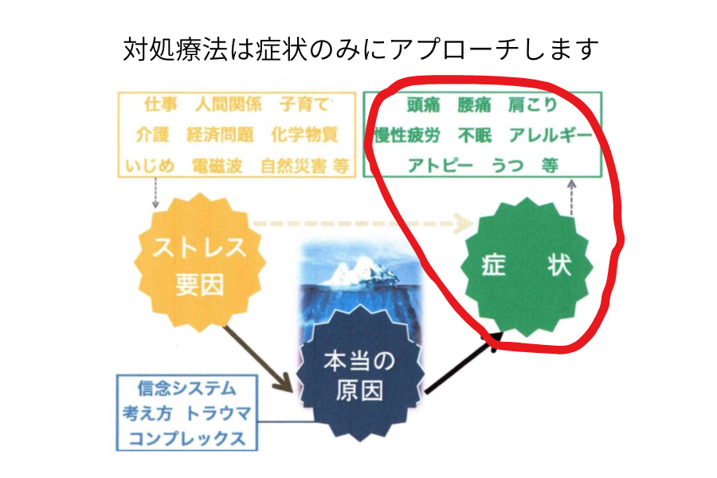
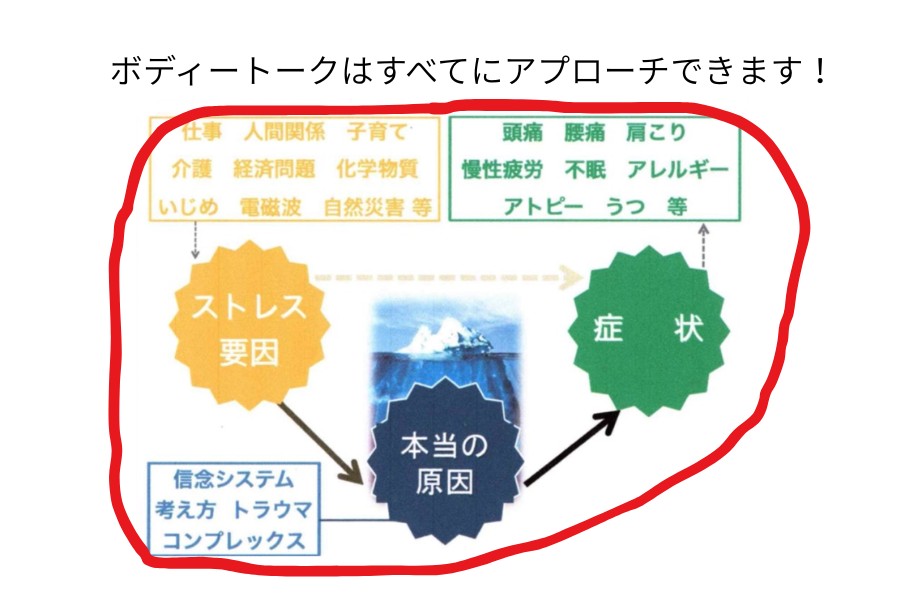

ボディートークとは
ボディートークは、肉体面・精神面のつながりを整え、自然治癒力の促進を目的としたホリスティック（全体的）なアプローチの療法です。
1990年代半ばにオーストラリアで開発され、現在では35ヵ国以上で新時代の健康管理システムとして活用されています。
私たちの心身は様々な部位同士がコミュニケーションを取り合っています。
このコミュニケーションが正常に取れていると、
自身の治癒力が最大限に発揮され、健康な状態に限りなく近づくことができます。
しかし、このコミュニケーションを阻害してしまうものがあります。
それがストレスです。
様々な不調の根底にはストレスが関わっているのです。
ボディートークは症状だけでなく、ストレス要因やトラウマなどの根本的な側面からアプローチすることができます。


たとえば、 「過去に虐待されたことで過剰に人を怖がってしまい、人馴れしない」 という犬猫がいたとします。
この場合、虐待されたときに感じたストレスを解放すれば人馴れしやすくなります。
不調や症状は、
単に「悪いもの」「取り除くもの」ではなく、
今のあなたにとって何かを伝えようとしているサインであることも少なくありません。
「なぜ今その状態が起きているのか」
「どんな背景や意味があるのか」
といった部分も大切にしながら、
その方にとって本来のバランスへ戻る道筋を整えていきます。
ボディートークはオンラインでのセッションも可能です
ボディートークは、対面でのセッションだけでなく、
オンラインでのセッションも可能です。
身体や意識は距離に関係なく反応するため、
必要な調整はオンラインでも行うことができます。
セッション形式
①対面
蒲郡市内にあるセッションルームに直接お越しいただき、セッションを行います。
静かな空間で、リラックスして受けていただけます。
②オンライン
Zoomを使用してセッションを行います。
遠方にお住まいの方や、
外出が難しい方でも、
ご自宅にいながら受けていただけます。
施術ではどんなことをするのか
対面セッションでは、ベッドに横になってリラックスした状態で受けていただきます。 「神経-筋バイオフィードバック」という腕の筋肉の反応を通して体からの情報を読み取る技法を用い、 タップという手法を使って、探したコミュニケーションを修復します。 新たにバランスをとる箇所があれば、①に戻って新たに項目を探し、修復を促します。
オンラインセッションの場合は、ご自宅などでそのまま楽な姿勢で受けていただけます。
強く触れたり、無理に動かしたりすることはありません。
やさしい刺激で行う、安心・安全なセッションです。
①体の声を確認します
その方のどこのバランスをとっていくかを尋ねます。
※これが体と話しているように見えることから「ボディートーク」と呼ばれています。
②タップによる調整を行います
③必要に応じて繰り返します
器具や薬などは一切使用しないので、リスクや痛みを感じることなく施術を受けていただけます。
変化について
ボディートークの変化は、必ずしもその場で劇的に変わるものではありません。
数日～数週間経って気がついたら楽になっていた、という形もよくあります。
※一時的にどこかが「悪くなった」と感じられる場合があります。
(例：免疫系のバランスをとったら熱が出た、感情を解放したら下痢のような形で解放が起こったなど)